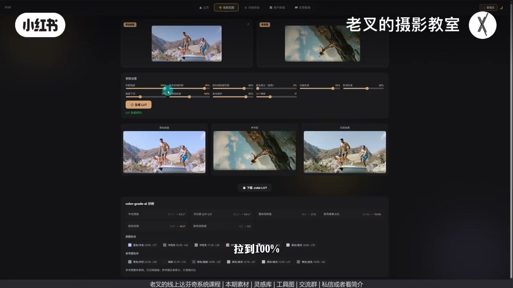
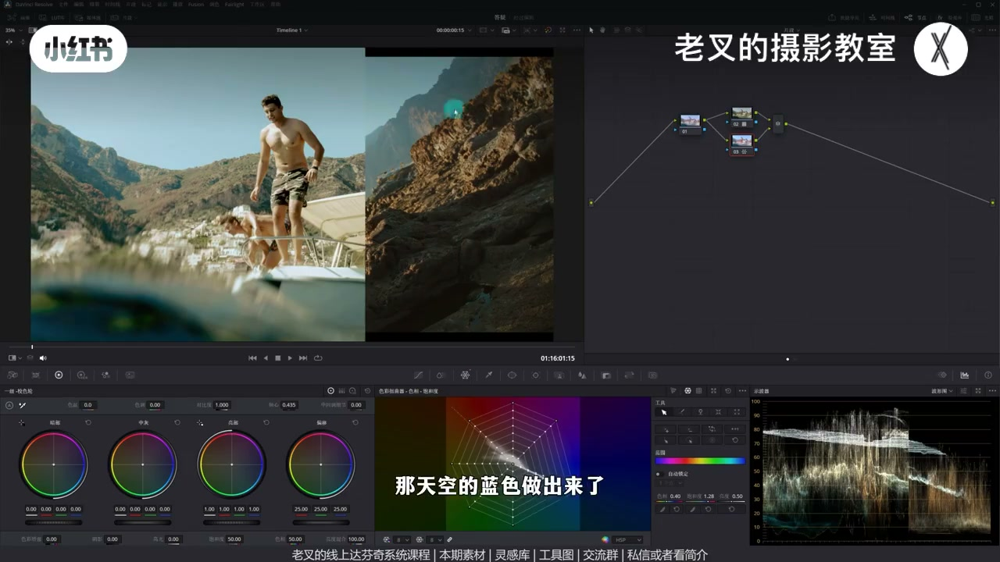
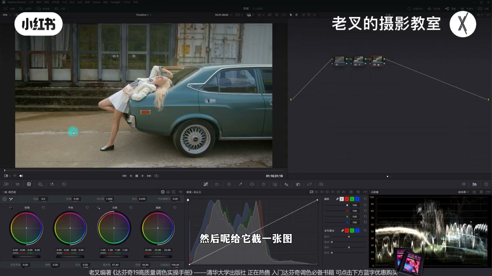
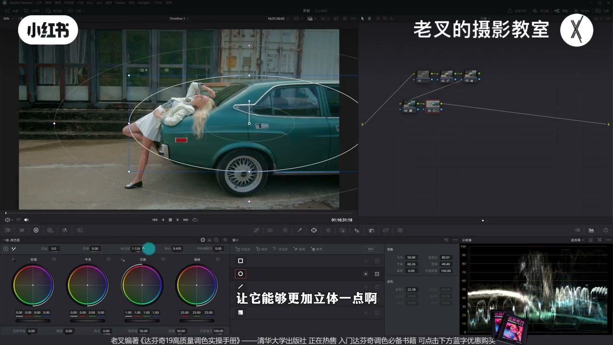
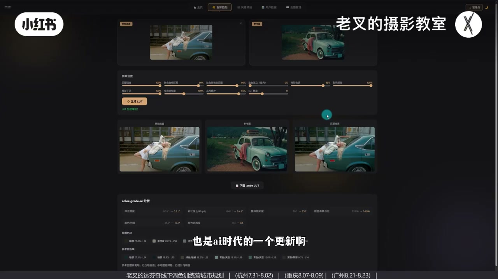

内容要点
一键仿色工具升到 V3：更多调色大模型介入。直出或灰片（先还原）上传生成 LUT，匹配强度可拉满并补饱和；达芬奇侧暂用 Rec.709 非广色域。套 LUT 后用并行向量修天蓝/高光暖、渐变遮罩分区，灰片案例再用内外节点塑氛围。预告网页端经 WorkBuddy 自动进达芬奇，降低 Codex 门槛。
知识结构
上传素材+参考；默认70%可拉满100%，可加全局饱和再生成。
暂勿用达芬奇广色域 LUT；默认709套用看影调变化。
向量加蓝饱和靠青；暖高光加饱和略降黄；渐变压天空氛围。
先还原曝光饱和→截图生成；LUT 必须套在还原后。
主体遮罩对比度+轴心；外部节点压其余，LUT 作风格基底。
网页反馈；免费素材工具；WorkBuddy 自动进达芬奇开发中。
V3 LUT 是快速风格基底，不是终稿：先选对色彩空间与还原顺序，再用少量节点修色相分区。自动降低门槛，最终观感仍靠你的调色判断。
00:00-00:50V3：上传参考生成 LUT，强度与饱和可重跑
开场演示：传参考、点生成 LUT，简单操作即可大变风格。工具到 V3，按反馈优化并增加更多调色大模型。直出素材上传后再传参考生成；默认匹配约 70%，可拉满 100%，饱和偏低可加全局饱和再生成。LUT 无法做局部，结果接近但仍有差别，下载后进达芬奇。

00:50-01:18套用前：先检查色彩空间，暂用 709
目前还不能选达芬奇广色域——广色域 LUT 逻辑不同，仍在优化。默认 Rec.709 下结果通常不错。建节点套入 LUT，影调会明显变化。
01:18-02:21对照参考：并行向量修天蓝与暖高光，渐变压天空
与参考比：天空偏灰、高光暖色偏黄不舒服。Shift/Option+P 建并行，用向量示波器增加蓝饱和并靠青；再略加暖色饱和、略降黄，让橙更干净。新节点做与光线平行的渐变遮罩，压右上天空，氛围与层次立刻上来，整体非常接近参考。强调：用 LUT 仍需一定调色能力。

02:21-03:19灰片：先还原再生成；LUT 套在还原之后
灰片先简单还原：曝光到位、饱和拉上，截图上传工具再配参考生成。强度可到 100%，反差等参数微调后重跑。套用必须在还原后的新节点——LUT 行为不特别暴力，保留后续调整空间。

03:19-04:32再分区：主体立体 + 外部压暗，LUT 当风格基底
参考整体更暗时：中间人物与车画遮罩，对比度+轴心右移更立体又暗；Alt/Option+O 外部节点对其余同样组合压暗。三节点开关可见：氛围建立在 LUT 风格基底上，颜色细节（如车色）可再调，重点是影调关系被快速拉近。

04:32-05:24反馈入口 + WorkBuddy 自动进达芬奇预告
欢迎试用；问题可网页头像反馈或私信。两则素材与参考在知识平台可免费领，工具免费。预告：相对 Codex 自动调色门槛，正做网页端只调国产 WorkBuddy 即可自动应用到达芬奇，开发中即将上线。

完整转录（235段）
以下文本由 Whisper medium 模型自动转录，可能存在少量识别误差，已尽可能修正。
把我们需要参考的画面传上去
点击生成LUT
给它一定的时间
它就生成好了一个匹配结果
我们通过非常简单的操作
就能让画面从这样变成这样
我们这个工具来到V3版本
根据大家反映的一个问题
我做了一定的修改优化
增加了更多调色大模型的介入
这次我们用这个素材来演示
这是一个直出画面
我们把它传到这个网站上
然后再把我们需要参考的画面传上去
点击生成LUT
给它一定的时间
它就生成好了一个匹配结果
但是我觉得这个强度不是很够
因为我给它设置的默认匹配强度是70%
我觉得需要给它拉满
拉到100%
然后我觉得它饱和度也是有点低的
所以我再增加一点全局的饱和度
调好参数之后
我们再一次点击生成LUT
稍等一会儿
它就能够出现一个修改后的结果
感觉还挺像的
但是肯定会有区别
因为它没法通过局部调整
来实现某些效果
我们点击下载LUT
再把它打到达分集中
我已经倒完了
是这个LUT
在我们套用之前
大家可能得检查一下
你的色彩空间设置
目前你还不能选择达分集广色域
因为广色域的LUT
它的逻辑稍微有点不同
我还在优化
在默认709的情况下
它的结果就能够不错了
我们可以套上去看一下
我建立一个节点
把刚刚拉进来的这个LUT套上去
套上去了之后
整体的影调其实有个明显的变化
但是和参考图去做对比
你会发现颜色差别是比较大的
第一个就是天空
我们的天空太灰了
第二个就是我们高光的暖色
没有它舒服
我们太黄了
那这个要怎么解决
我建议大家按住L的加P
或者是Option加P
建立一个并行节点
在新建的下面这个节点中
我们可以利用蜘蛛网
来把蓝色的薄度增加
并且让它改变一下色相
让它往青色方向稍微靠一靠
我们可以与参考图去做对比
这一部分稍微再来一点点
那天空的蓝色做出来了
然后再优化我们这个受光面
它的高光的暖色
我们可以把这个暖色的薄度
稍微给它增加一点点
也可以稍微降低一点黄色
让它这个橙色能够更加干净
好 我觉得大概做到这个程度
差不多了
与参考图是比较接近了
对不对
也可以再来一个节点
稍微改变一下影调的分布
我觉得因为我们这个画面
光是从左上往右下来的
那么我们就可以做一个
平行与这个光的一个渐变遮照
从右上往左下来
大概是这样的一个情况
然后把右上角的天空
给它稍微压暗一点点
你看 是不是压暗了之后
能够让它有更强的一个氛围感
它的层次也能够变得更加丰富了
那这样一做
我们与参考图去对比的话
就会非常接近了 对吧
整体效果挺好的
最重要的就是
我们通过非常简单的操作
就能让画面从这样变成这样
你看 这种风格塑造是非常非常快的
额外说的一个点就是
我们要用这个LUT
还是得要基于我们对画面
有一定的调色能力的
而调色的学习也有线上课程
和线下调色训练营
大家如果有需要的话
也可以来找我
那这个是指出画面的调色
如果是一个灰片
我们以这个画面为例
我们先给它做一下简单的还原
还原非常简单
曝光做到位
饱和度给它拉上来
到这个程度就行了
然后给它截一张图
同样回到我们这个工具
把刚刚截的图给它揣上来
再找一张参考图
我这里同样也是
随便找了一张参考图
这两个风格差别是非常大的
对吧
然后再次点击生成LUT
有一定的效果
但效果不是特别到位
同样还是我们可以稍微把匹配强度
给它增加到100
然后按不下沉
也可以给它稍微增加一点
我觉得整体的一个反差
也是有点低的
我们都可以这些微调一下参数
调完了之后
再给它生成一次LUT
你看 这个效果感觉更好了
对吧
我已经套完了
我们要套用这个LUT的话
一定要在还原后
我们再新建一个节点
把这个LUT套上去
一套
你看
效果其实挺好的
对吧
影调也有 颜色也有
而且它做的行为
不会特别的暴力
所以它能够保留更多的调整空间
能够让你去自由发挥
但是与参考图去做对比的话
我们会看到参考图
整体是比我们要偏暗的
对吧
我们也可以对我们的画面
再一次的做调整
我们可以再来一个节点
给中间人物和车画
一个简单的遮罩
然后通过对比度和轴心的调整
让它能够更加立体一点
轴心可以向右移动一点
让它能够又暗又立体
然后我们再按着ALT加O
或者是OPTION加O
建立一个外部节点
把其余部分也通过
对比度和轴心的一个组合
来把它稍微压暗一些
力度可以大一点
轴心向右移动
让它变暗一些
好 此时你看
这两个节点的调整
是不是让我们的画面
更加有氛围了
而这个氛围就是通过我们这个LUT
作为一个风格化的基底来实现的
我们通过这三个节点
一起开关来看一下
风格化的塑造
是不是非常非常容易
虽然和我们参考图
会有一定的区别
它整体都是非常闷的
但这都是我们自己
可以随便调整的
包括车的颜色 对吧
这都是可以调整
重点在于我们
整体的一个影的关系
它是能够通过这个LUT的功能
来快速的实现
效果还是挺好的 对吧
那也欢迎大家
多多来尝试这个工具
如果你遇到了任何的问题
都可以反馈给我
你可以选择在这个右上角
点击你登录之后的头像
在这里写上你的反馈意见
也可以你来找我 对吧
那这一期这两个素材
以及参考图
我都传到了现场分享平台
大家如果想要感受一下的话
也可以来找我免费领取
这个工具也是免费的
然后呢在一个小预告
不知道大家最近
有没有看到很多人
有发过一个视频
就是比如用Codex
去自动给你画面做调色
这个功能当然很好
也是AI时代的一个更新
但是你想要去实现这个点
你不还是得要借助Codex吗
而Codex对于普通用户来讲
安装跟使用或者注册
还是有一定的门槛的
那我现在正在做一个
能够通过网页端
只需要调取一个
国产软件WorkBuddy
它就能够自动帮你
去应用在你的达分器中
那这个功能还在开发
很快就会上线
可能就这两天了
大家可以期待一下
好了
那这期就到这里
886